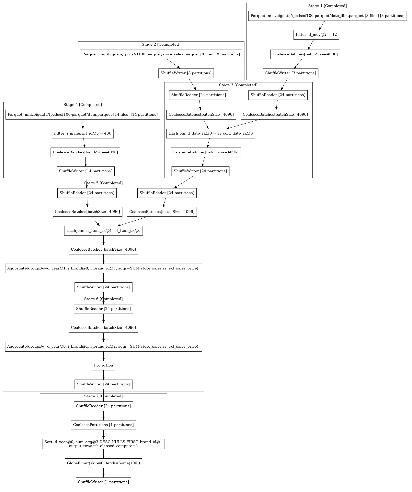

Tuning Guide¶
Partitions and Parallelism¶
The goal of any distributed compute engine is to parallelize work as much as possible, allowing the work to scale by adding more compute resource.
The basic unit of concurrency and parallelism in Ballista is the concept of a partition. The leaf nodes of a query are typically table scans that read from files on disk and Ballista currently treats each file within a table as a single partition (in the future, Ballista will support splitting files into partitions but this is not implemented yet).
For example, if there is a table “customer” that consists of 200 Parquet files, that table scan will naturally have
200 partitions and the table scan and certain subsequent operations will also have 200 partitions. Conversely, if the
table only has a single Parquet file then there will be a single partition and the work will not be able to scale even
if the cluster has resource available. Ballista supports repartitioning within a query to improve parallelism.
The configuration setting datafusion.execution.target_partitionscan be set to the desired number of partitions. This is
currently a global setting for the entire context. The default value for this setting is 16.
Note that Ballista will never decrease the number of partitions based on this setting and will only repartition if the source operation has fewer partitions than this setting.
Example: Setting the desired number of shuffle partitions when creating a context.
use ballista::extension::{SessionConfigExt, SessionContextExt};
let session_config = SessionConfig::new_with_ballista()
.with_target_partitions(200);
let state = SessionStateBuilder::new()
.with_default_features()
.with_config(session_config)
.build();
let ctx: SessionContext = SessionContext::remote_with_state(&url,state).await?;
Configuring Executor Concurrency Levels¶
Each executor instance has a fixed number of tasks that it can process concurrently. This is specified by passing a
concurrent_tasks command-line parameter. The default setting is to use all available CPU cores.
Increasing this configuration setting will increase the number of tasks that each executor can run concurrently but this will also mean that the executor will use more memory. If executors are failing due to out-of-memory errors then decreasing the number of concurrent tasks may help.
Configuring Executor Memory Pool¶
By default the executor uses DataFusion’s unbounded memory pool, so spillable
operators (sort, hash join, hash aggregate) grow until the host runs out of
memory. To bound executor memory and let those operators spill to disk under
pressure, pass --memory-pool-size when starting the executor:
ballista-executor --memory-pool-size 8GB --concurrent-tasks 8
The argument accepts human-readable sizes (8GB, 512MiB) or a plain byte
count. SI suffixes (KB/MB/GB) are powers of 10; IEC suffixes
(KiB/MiB/GiB) are powers of 2.
The total budget is divided equally across concurrent task slots: each task
receives its own FairSpillPool of size memory_pool_size / concurrent_tasks.
With --memory-pool-size 8GB --concurrent-tasks 8, every task sees a 1 GB
pool, fully isolated from other tasks. Idle slots do not lend their share to
busy ones, which keeps task memory predictable at the cost of some unused
capacity when the executor is under-utilized.
The executor refuses to start if the per-task share would round to zero (i.e.
memory_pool_size < concurrent_tasks).
When --memory-pool-size is not set, the executor behaves as before with no
memory pool installed.
Join Algorithm Selection¶
For equi-joins, DataFusion (and therefore Ballista) defaults to
HashJoinExec. Hash join is fast but builds an in-memory hash table on one
side of the join, which can blow past the executor’s memory budget on
queries that join several large tables (TPC-H q9 is the canonical example:
a 6-way join across part, supplier, lineitem, partsupp, orders,
and nation).
When an executor is OOM-killed mid-query, the symptoms are:
one (or more) executor process exits with
Killedin its logthe kernel’s cgroup OOM killer fires (visible in
dmesg/journalctl -k)the in-flight job appears to hang on the client, because the scheduler had assigned tasks to the now-dead executor
Two ways to relieve memory pressure on join-heavy queries:
Increase the executor memory budget. Raise the executor container’s
memory limit and/or --memory-pool-size, keeping the pool comfortably
below the container limit so that parquet decode buffers, shuffle reader
buffers, and runtime overhead all fit alongside it.
Switch to sort-merge join. Set
datafusion.optimizer.prefer_hash_join = false to make the planner pick
SortMergeJoinExec for equi-joins where both inputs can be sorted on the
join keys. Sort-merge avoids the build-side hash table at the cost of
sorting both inputs, so peak memory is typically lower but wall-clock time
is higher. As a rough data point, on the bundled TPC-H bench at SF10 with
a 12 GB executor cap, q9 OOMs with hash join but completes in about 5.4 s
with sort-merge.
let session_config = SessionConfig::new_with_ballista()
.set_bool("datafusion.optimizer.prefer_hash_join", false);
The same key can be passed to the tpch benchmark binary via
-c datafusion.optimizer.prefer_hash_join=false.
Shuffle Implementation¶
Ballista exchanges data between query stages by writing the output of each upstream task to local files, which downstream tasks read either from disk (when co-located) or over Arrow Flight. Two shuffle implementations are available, with different trade-offs around file count, memory use, and write latency.
Sort-based shuffle (default)¶
The sort-based writer accumulates batches in a per-output-partition in-memory buffer. When the total buffered size crosses a threshold, the largest buffers are spilled to disk. After the input stream finishes, the remaining in-memory data and any spilled batches are merged and written into a single consolidated Arrow IPC file per input partition, alongside an index file that lets readers seek directly to a given output partition.
This produces 2 × N files instead of N × M, coalesces small batches
to a target size before writing, and bounds shuffle memory use via
spilling — at the cost of higher write latency than the hash writer.
Hash-based shuffle (opt-in)¶
The hash-based writer hashes each incoming RecordBatch and immediately
encodes the per-partition slices to Arrow IPC, streaming them into one
file per (input_partition, output_partition) pair. Nothing is buffered
in memory across batches.
This is simple and low latency, but for N input partitions and M
output partitions it produces N × M files. Wide shuffles can therefore
generate a large number of small files. Consider switching to the
hash-based writer for narrow shuffles where the additional buffering
and merging of the sort-based writer is unnecessary overhead:
let session_config = SessionConfig::new_with_ballista()
.set_bool("ballista.shuffle.sort_based.enabled", false);
The following session-level keys tune its behavior:
key |
type |
default |
description |
|---|---|---|---|
ballista.shuffle.sort_based.enabled |
Boolean |
true |
Enables the sort-based shuffle writer. |
ballista.shuffle.sort_based.buffer_size |
UInt64 |
1048576 |
Per-partition buffer size in bytes (1 MiB default). |
ballista.shuffle.sort_based.memory_limit |
UInt64 |
268435456 |
Total in-memory budget across all output-partition buffers (256 MiB default). |
ballista.shuffle.sort_based.spill_threshold |
Utf8 |
“0.8” |
Fraction of |
ballista.shuffle.sort_based.batch_size |
UInt64 |
8192 |
Target row count when coalescing buffered batches before they are written or spilled. |
Adaptive Query Execution (Experimental)¶
Ballista has experimental support for adaptive query execution (AQE), where the scheduler re-runs the DataFusion physical optimizer between query stages. This lets the planner make decisions using statistics collected from completed stages rather than relying solely on pre-execution estimates.
AQE is disabled by default. To enable it, set
ballista.planner.adaptive.enabled to true on your SessionConfig:
let session_config = SessionConfig::new_with_ballista()
.set_bool("ballista.planner.adaptive.enabled", true);
When AQE is enabled, the scheduler logs a warning at job submission so it is clear that AQE was used:
Adaptive Query Planning is EXPERIMENTAL, should be used for testing purposes only!
Configuration¶
key |
type |
default |
description |
|---|---|---|---|
ballista.planner.adaptive.enabled |
Boolean |
false |
Enables the adaptive planner. Experimental. |
ballista.planner.adaptive.planner_pass |
UInt64 |
3 |
Maximum optimizer passes the adaptive planner runs per replan. |
What AQE does today¶
When AQE is enabled, the scheduler builds the stage DAG incrementally. As each shuffle stage completes, the planner re-optimizes the remaining plan and emits the next set of runnable stages. Two adaptive optimizations are currently implemented:
Join reordering. Uses runtime row counts from completed stages so the smaller side drives the join.
Empty stage elimination. When a completed stage produces zero rows, its downstream exchange is replaced with an empty execution node, and emptiness is propagated up the plan so downstream stages are skipped entirely.
Current limitations¶
The implementation covers the happy path only. The following are known to be missing or incomplete:
Executor failure handling on the AQE path
Dynamic coalescing of shuffle partitions
Switching from hash join to sort-merge join based on runtime statistics
Switching from streaming aggregation to hash aggregation based on runtime statistics
Until these gaps are closed, AQE should be used for testing and experimentation rather than production workloads. See issue #387 for the tracking issue and ongoing work.
Push-based vs Pull-based Task Scheduling¶
Ballista supports both push-based and pull-based task scheduling. It is recommended that you try both to determine which is the best for your use case.
Pull-based scheduling works in a similar way to Apache Spark and push-based scheduling can result in lower latency.
The scheduling policy can be specified in the --scheduler-policy parameter when starting the scheduler and executor
processes. The default is pull-staged.
Viewing Query Plans and Metrics¶
The scheduler provides a REST API for monitoring jobs. See the scheduler documentation for more information.
This is optional scheduler feature which should be enabled with rest-api feature
To download a query plan in dot format from the scheduler, submit a request to the following API endpoint
http://localhost:50050/api/job/{job_id}/dot
The resulting file can be converted into an image using graphviz:
dot -Tpng query.dot > query.png
Here is an example query plan:
